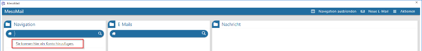
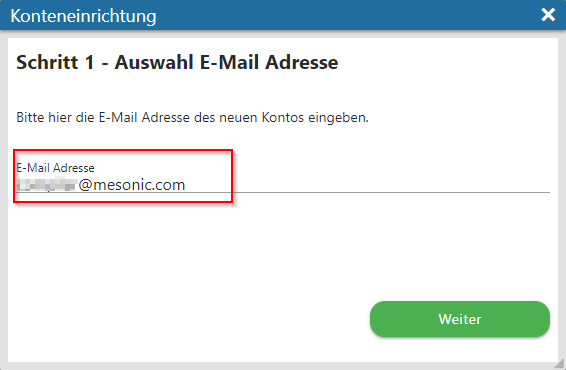
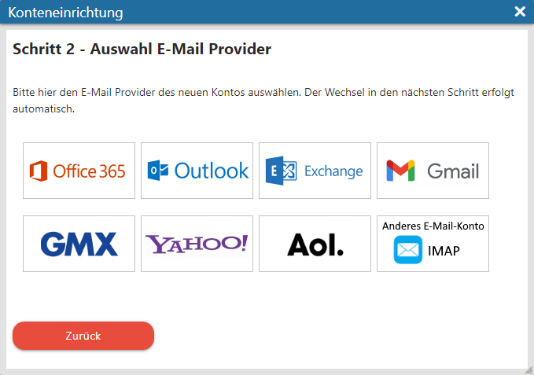
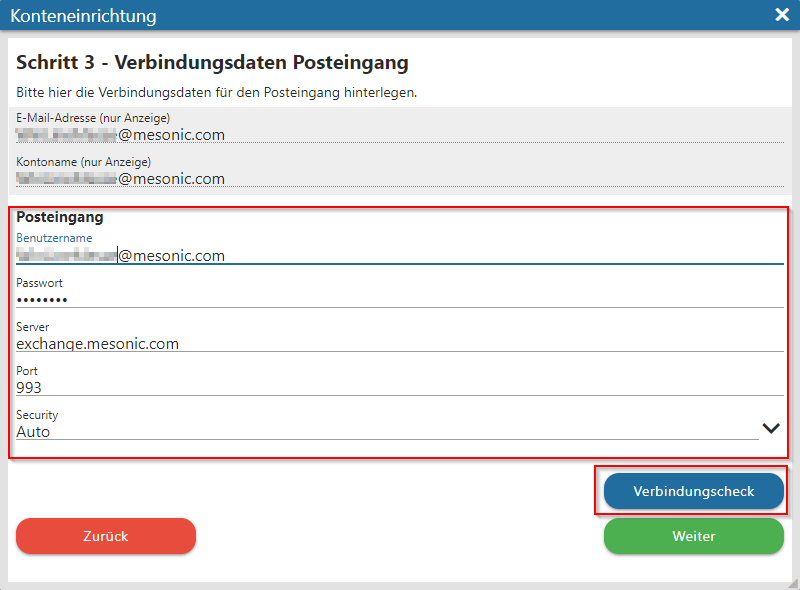
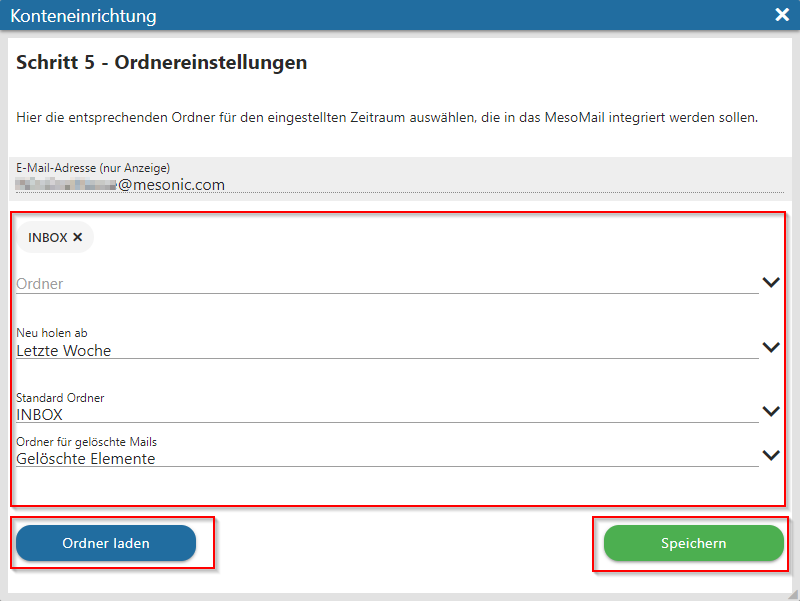

Beim erstmaligem Aufruf des MesoMail, wird dieses leer aufgerufen, d. h. es wurde noch mit keinem externen E-Mail-Account verknüpft. Über "Sie können hier ein Konto hinzufügen" kann der Assistent der Konteneinrichtung aufgerufen werden.

Der Assistent führt durch insgesamt fünf Schritte:
Schritt 1 - Auswahl der E-Mail Adresse
Hier wird die Mailadresse angegeben, die in das MesoMail integriert werden soll

Schritt 2 - Auswahl E-Mail Provider
In diesem Schritt kann der Provider ausgewählt werden. Bei Klick auf einen Provider wird direkt in den nächsten Schritt gewechselt.

Schritt 3 - Verbindungsdaten Posteingang
In diesem Schritt können die Daten für den Posteingang hinterlegt werden. Es müssen der Benutzername, Passwort, Server, Port und Security (Verschlüsselung) angegeben werden. Nach Eingabe der Daten kann ein "Verbindungscheck" durchgeführt werden. Beim Klick auf "Weiter" wird dieser automatisch durchgeführt und es kann nur in den nächsten Schritt gewechselt werden, wenn der Verbindungscheck erfolgreich ist.

Schritt 4 - Verbindungsdaten Postausgang
In diesem Schritt können die Daten für den Postausgang hinterlegt werden. Es müssen der Benutzername, Passwort, Server, Port und Security (Verschlüsselung) angegeben werden. Auch hier steht ein Verbindungscheck zur Verfügung. Beim Klick auf "Weiter" wird dieser automatisch durchgeführt und es kann nur in den nächsten Schritt gewechselt werden, wenn der Verbindungscheck erfolgreich ist. Falls kein abweichender Postausgang definiert werden soll, kann direkt in den nächsten Schritt gewechselt werden.
Schritt 5 - Ordnereinstellungen
Im finalen fünften Schritt können können Ordner und ein Zeitraum angegeben werden, die in das MesoMail integriert werden sollen. Zudem kann ein Standard-Ordner und ein Ordner für die zu löschenden Mails angegeben werden. Über "Ordner laden" können die Ordner neu geladen werden, wenn die Eingaben in diesem Schritt geändert werden. Über den "Speichern"-Button wird der Assistent beendet.
